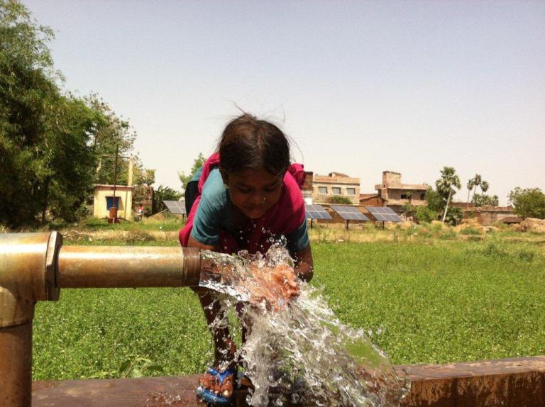
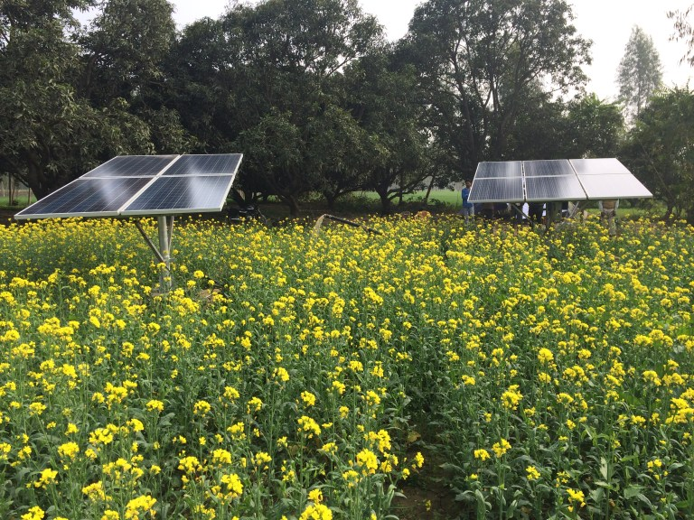
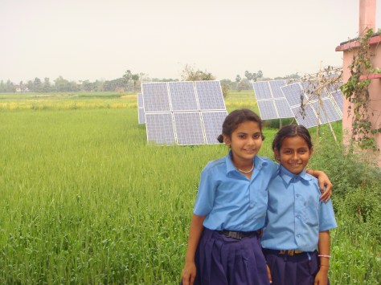

SPRINKLERS
Interest Area
Our objective has been to ease unfulfilled water needs, not just for irrigation but for drinking and other daily requirements, and also bring a reliable source of rural electrification to rural communities.
While all this development activity addresses economic and lifestyle issues, it should be noted that this has a positive impact on the environment as well. Using solar energy to power rural development activities can help steer villages clear from the pollution problems currently being faced by urban areas – air pollution, annual increase in average temperature etc. In fact, villages can become a model for a more sustainable social setup, using renewable energy methods for powering live hoods.
We ensures a transparent development process, with complete accountability for installations and system performance.
PROJECT FACILITATION
Our CSR Partners can contribute to a project by providing complete/partial funding for the cost of machinery and installations required in the project. The organization may consider associating with us from concept to completion, and monitoring thereof, or we can also work with their existing NGO partner and execute the projects as desired. we takes responsibility for managing the project, including the following aspects:
- Deploying CSR funds in focused areas, for under-developed societies
- Designing the project / supporting the associated NGO in project proposal
- Project location selection
- Allocating dedicated manpower for Installation of the project
- Reliable post-installation services
- Training the end user about maximum utilization of resources
- Efficient operation of the project
- Before and After Impact Survey
DRinking water

Problem Area:
Some of the most remotely located people in India face the acute problem of water scarcity. These people have to either travel significant distances every day, to collect fresh water, or end up using water that may not be fit for consumption. Adults have to forgo profitable and productive activities in order to fetch a few litres of water from distant locations, while children miss out on school time, as they are sometimes given the responsibility of fetching water.
Goal:
Easy access to clean and fresh ground water for rural communities
Sustainable Irrigation
 Problem Area:
The Indian agriculture sector accounts for 17 per cent of India’s gross domestic product (GDP) and engages almost 50 per cent of the country’s workforce. However, the majority of our farmers does not have access to reliable electricity and are either dependent on rainfall for irrigation or on diesel engines to power the pumps. The situation is even worse for small scale and marginal farmers who cannot afford expensive diesel and, many a time, stay without cultivation or end up improperly irrigating land, which leads to a low produce. This, along with the ever rising threat of global warming, provides enough cause for concern and impetus for us to make the move towards sustainable agricultural practices.
Goal
To empower farmers with solar pumps for irrigation and reduce their dependency on expensive and/or unreliable options
Sanitaion

Problem Area:
Lack of water availability and sanitation place many hurdles to education in the rural sector. Most rural schools lack toilet facilities; and even if they do have these facilities, they don’t get proper water supply for sanitation to keep these toilets running. Lack of clean toilets has often been attributed to as a prime reason in discouraging children from attending schools. It is needless to mention, in this situation the girl child is the worst affected.
Goal
To reduce the number of ‘absent’ school days for children, which are caused by a lack of clean water for sanitation.